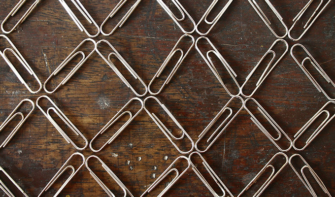
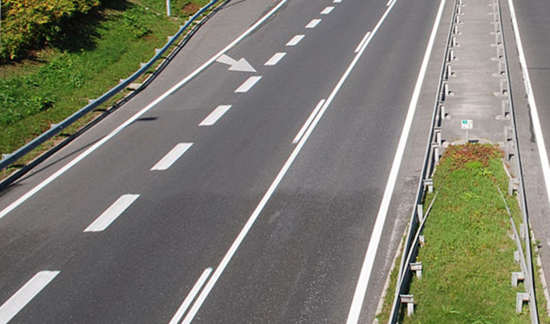
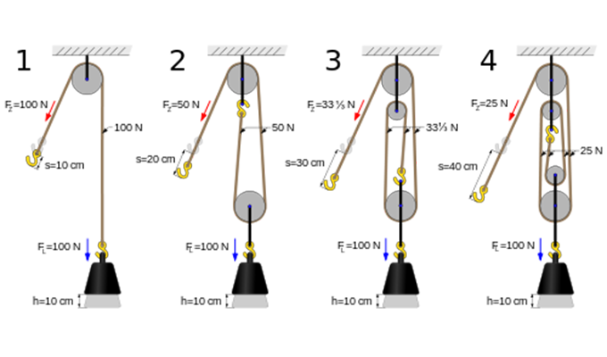

Donia Robinson
: Front End Developer
Featured Work

Online Resume
Check it out!

Classic Arcade Game Clone
Check it out!

Website Optimization
Check it out!
Neighborhood Map Project
Check it out!
Health Tracker
Check it out!
Feed Reader Testing
Check it out!
Online Resume
I have not completed this project yet. Please check back!